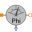
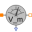
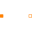

PartialTwoPortsElementaryPartial component with two magnetic ports p and n for textual programming |
Information
This information is part of the Modelica Standard Library maintained by the Modelica Association.
Partial model of a flux tube component with two magnetic ports: the positive port connector port_p, and the negative port connector port_n.
Connectors (2)
| port_p |
Type: PositiveMagneticPort Description: Positive magnetic port |
|
|---|---|---|
| port_n |
Type: NegativeMagneticPort Description: Negative magnetic port |
Extended by (8)
|  |
Modelica.Magnetic.FluxTubes.Sensors
Sensor to measure magnetic flux |
|  |
MagneticPotentialDifferenceSensor Modelica.Magnetic.FluxTubes.Sensors
Sensor to measure magnetic potential difference |
|
Modelica.Magnetic.FluxTubes.Sources
Signal-controlled magnetic flux source |
|
|
Modelica.Magnetic.FluxTubes.Sources
Source of constant magnetic flux |
|
|
SignalMagneticPotentialDifference Modelica.Magnetic.FluxTubes.Sources
Signal-controlled magnetomotive force |
|
|
ConstantMagneticPotentialDifference Modelica.Magnetic.FluxTubes.Sources
Constant magnetomotive force |
|
|  |
Modelica.Magnetic.FluxTubes.Interfaces
Partial component with magnetic potential difference of the two magnetic ports p and n and magnetic flux Phi from p to n |
|
Modelica.Magnetic.FluxTubes.Basic
Short cut branch |